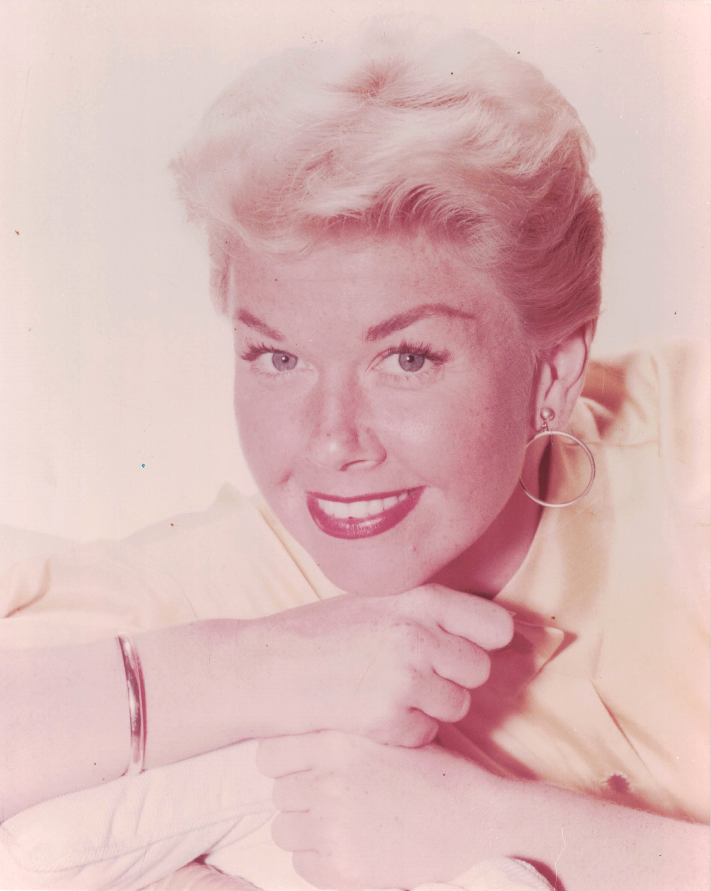

Product No. HEC-0030
$12.99
Shipping: $8.95
Description
8x10 Color photograph
Full Description
Doris Day (Deceased) was an American actress, singer, and recording star who became one of the most popular entertainers of the 20th century. Born April 3, 1922, in Cincinnati, Ohio, she first achieved fame as a big-band singer before becoming a major Hollywood movie star. Day recorded numerous hit songs, including "Sentimental Journey," "Secret Love," and "Que Sera, Sera (Whatever Will Be, Will Be)," which became closely identified with her career. Her successful films included "Calamity Jane," "Love Me or Leave Me," "The Man Who Knew Too Much," "Pillow Talk," "Please Don't Eat the Daisies," and "That Touch of Mink." She was especially known for romantic comedies and frequently appeared opposite Rock Hudson and James Garner. Day received an Academy Award nomination for "Pillow Talk" and later starred in the television series "The Doris Day Show." After retiring from entertainment, she became a prominent advocate for animal welfare. Doris Day died on May 13, 2019, at age 97. Doris Day autographs, signed photographs, movie memorabilia, and vintage Hollywood collectibles remain popular with collectors of classic film and music.
Condition
Excellent condition